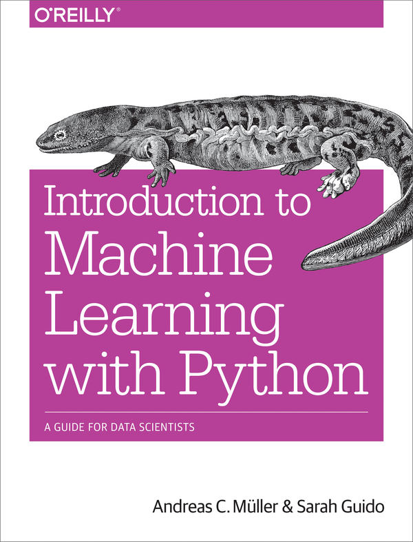

Machine Learning with Python
A new book has recently been published that may be of interest to our community:
Introduction to Machine Learning with Python
Data driven approaches have taken over many empirical sciences and many business application. Machine learning algorithms are one of the most important tools for extracting knowledge and making decision based on complex datasets. This book takes a practical approach to machine learning, using Python and the scikit-learn library. Starting from the basics, it explains how and when to use machine learning, discusses common methods and points out pitfalls for beginners. Every method and example comes with code in the form of Jupyter notebooks. The book requires a basic understanding of the Python programming language and some familiarity with NumPy. Experience with matplotlib is helpful to gain a better understanding of the visualizations.
Andreas Müller received his PhD in machine learning from the University of Bonn. After working on computer vision applications at Amazon for a year, he joined the Center for Data Science at New York University. He is a maintainer of and core contributor to scikit-learn, and has authored and contributed to several other widely used machine learning packages.
Sarah Guido is a data scientist who has spent a lot of time working in start-ups. She loves Python, machine learning, large quantities of data, and the tech world. An accomplished conference speaker, Sarah attended the University of Michigan for grad school and currently resides in New York City.

If you are the author of a book that is related to Software Carpentry or Data Carpentry’s mission, and would like to announce it here, please get in touch.